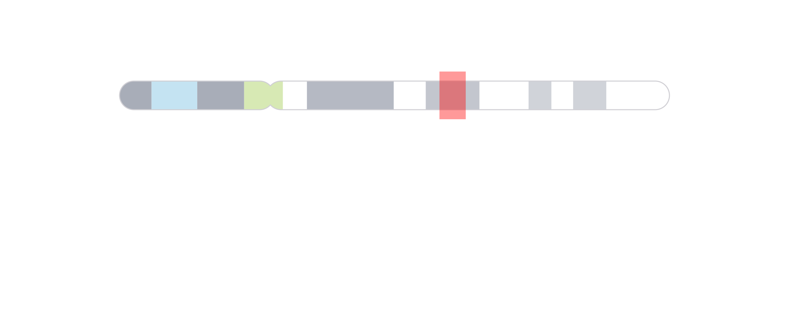

plotgardener is modular and separates plotting and
annotating into two different categories of functions. To specify which
plot to annotate within an annotation function, each annotation function
has a plot parameter that accepts plotgardener
plot objects. This will facilitate in inheriting genomic region and plot
location information. In this article we will go through some of the
major types of annotations used to create accurate and informative
plotgardener plots.
All the data included in this article can be found in the
supplementary package plotgardenerData.
Genome labels
Genome labels are some of the most important annotations for giving
context to the genomic region of data. annoGenomeLabel()
can add genome labels with various customizations.
Genome labels can be shown at three different basepair scales (Mb,
Kb, and bp) depending on the size of the region and the desired accuracy
of the start and end labels. In the genomic region
chr21:28000000-30300000 we can use a Mb scale:
data("IMR90_HiC_10kb")
pageCreate(
width = 3, height = 3.25, default.units = "inches",
showGuides = FALSE, xgrid = 0, ygrid = 0
)
hicPlot <- plotHicSquare(
data = IMR90_HiC_10kb,
chrom = "chr21", chromstart = 28000000, chromend = 30300000,
assembly = "hg19",
x = 0.25, y = 0.25, width = 2.5, height = 2.5, default.units = "inches"
)
annoGenomeLabel(
plot = hicPlot, scale = "Mb",
x = 0.25, y = 2.76
)If we use a more specific genomic region like
chr21:28255554-29354665, the Mb scale will be rounded and
indicated with an approximation sign:
#> Warning: Start label is rounded.
#> Warning: End label is rounded.Thus, it makes more sense to use the bp scale for ultimate accuracy:
data("IMR90_HiC_10kb")
pageCreate(
width = 3, height = 3.25, default.units = "inches",
showGuides = FALSE, xgrid = 0, ygrid = 0
)
hicPlot <- plotHicSquare(
data = IMR90_HiC_10kb,
chrom = "chr21", chromstart = 28255554, chromend = 29354665,
assembly = "hg19",
x = 0.25, y = 0.25, width = 2.5, height = 2.5, default.units = "inches"
)
annoGenomeLabel(
plot = hicPlot, scale = "bp",
x = 0.25, y = 2.76
)
If our genomic region is small enough, annoGenomeLabel()
can also be used to display the nucleotide sequence of that region.
Similar to IGV, annoGenomeLabel() will first represent
nucleotides as colored boxes:

At even finer scales, annoGenomeLabel() will then
represent nucleotides with colored letters:

In the specific case of square Hi-C plots (hicSquare
objects), annoGenomeLabel() can annotate the genome label
along the y-axis:
data("IMR90_HiC_10kb")
pageCreate(
width = 3.25, height = 3, default.units = "inches",
showGuides = FALSE, xgrid = 0, ygrid = 0
)
hicPlot <- plotHicSquare(
data = IMR90_HiC_10kb,
chrom = "chr21", chromstart = 28000000, chromend = 30300000,
assembly = "hg19",
x = 0.5, y = 0.25, width = 2.5, height = 2.5, default.units = "inches"
)
annoGenomeLabel(
plot = hicPlot, scale = "Mb",
axis = "y",
x = 0.5, y = 0.25,
just = c("right", "top")
)
Plot axes
In addition to genomic axes, it is also common to annotate standard x
and y-axes for measures of scale. This functionality is provided by the
annoXaxis() and annoYaxis() functions. For
example, a Manhattan plot requires a y-axis to indicate the range of
p-values:
library("TxDb.Hsapiens.UCSC.hg19.knownGene")
data("hg19_insulin_GWAS")
pageCreate(
width = 7.5, height = 2.75, default.units = "inches",
showGuides = FALSE, xgrid = 0, ygrid = 0
)
manhattanPlot <- plotManhattan(
data = hg19_insulin_GWAS, assembly = "hg19",
fill = c("grey", "#37a7db"),
sigLine = TRUE,
col = "grey", lty = 2, range = c(0, 14),
x = 0.5, y = 0.25, width = 6.5, height = 2,
just = c("left", "top"),
default.units = "inches"
)
annoGenomeLabel(
plot = manhattanPlot, x = 0.5, y = 2.25, fontsize = 8,
just = c("left", "top"), default.units = "inches"
)
plotText(
label = "Chromosome", fontsize = 8,
x = 3.75, y = 2.45, just = "center", default.units = "inches"
)
## Annotate y-axis
annoYaxis(
plot = manhattanPlot, at = c(0, 2, 4, 6, 8, 10, 12, 14),
axisLine = TRUE, fontsize = 8
)
## Plot y-axis label
plotText(
label = "-log10(p-value)", x = 0.15, y = 1.25, rot = 90,
fontsize = 8, fontface = "bold", just = "center",
default.units = "inches"
)
annoXaxis() and annoYaxis() have similar
usages and customizations.
Heatmap legends
Heatmap-style plots with numbers translated to a palette of colors
require a specific type of legend. This legend can be plotted with
annoHeatmapLegend() in both vertical and horizontal
orientations. Genomic plots that typically require this annotation are
Hi-C plots made with plotHicRectangle(),
plotHicSquare(), or plotHicTriangle().
data("IMR90_HiC_10kb")
pageCreate(
width = 3.25, height = 3.25, default.units = "inches",
showGuides = FALSE, xgrid = 0, ygrid = 0
)
params <- pgParams(
chrom = "chr21", chromstart = 28000000, chromend = 30300000,
assembly = "hg19",
x = 0.25, width = 2.75, just = c("left", "top"), default.units = "inches"
)
hicPlot <- plotHicSquare(
data = IMR90_HiC_10kb, params = params,
zrange = c(0, 70), resolution = 10000,
y = 0.25, height = 2.75
)
## Annotate Hi-C heatmap legend
annoHeatmapLegend(
plot = hicPlot, fontsize = 7,
orientation = "v",
x = 0.125, y = 0.25,
width = 0.07, height = 0.5, just = c("left", "top"),
default.units = "inches"
)
annoHeatmapLegend(
plot = hicPlot, fontsize = 7,
orientation = "h",
x = 3, y = 3.055,
width = 0.5, height = 0.07, just = c("right", "top"),
default.units = "inches"
)
Hi-C pixels and domains
It is possible to annotate the pixels on a Hi-C plot with provided BEDPE data. Pixels can be annotated with boxes, circles, or squares.
data("IMR90_HiC_10kb")
data("IMR90_DNAloops_pairs")
pageCreate(
width = 3.25, height = 3.24, default.units = "inches",
showGuides = FALSE, xgrid = 0, ygrid = 0
)
hicPlot <- plotHicSquare(
data = IMR90_HiC_10kb, resolution = 10000, zrange = c(0, 70),
chrom = "chr21", chromstart = 28000000, chromend = 30300000,
assembly = "hg19",
x = 0.25, y = 0.25, width = 2.75, height = 2.75,
just = c("left", "top"),
default.units = "inches"
)
## Annotate pixels
pixels <- annoPixels(
plot = hicPlot, data = IMR90_DNAloops_pairs, type = "box",
half = "top"
)
If we want to annotate one pixel of interest, we can subset our BEDPE
data and annoPixels() will only annotate the specified
pixels:
data("IMR90_HiC_10kb")
data("IMR90_DNAloops_pairs")
## Subset BEDPE data
IMR90_DNAloops_pairs <- IMR90_DNAloops_pairs[which(IMR90_DNAloops_pairs$start1 == 28220000 &
IMR90_DNAloops_pairs$start2 == 29070000), ]
pageCreate(
width = 3.25, height = 3.24, default.units = "inches",
showGuides = FALSE, xgrid = 0, ygrid = 0
)
hicPlot <- plotHicSquare(
data = IMR90_HiC_10kb, resolution = 10000, zrange = c(0, 70),
chrom = "chr21", chromstart = 28000000, chromend = 30300000,
x = 0.25, y = 0.25, width = 2.75, height = 2.75,
just = c("left", "top"),
default.units = "inches"
)
## Annotate pixel
pixels <- annoPixels(
plot = hicPlot, data = IMR90_DNAloops_pairs, type = "arrow",
half = "bottom", shift = 12
)For genomic ranges of domain data, we can annotate Hi-C domains with
annoDomains(). For example, if we want to annotate the
following domains
domains <- GRanges("chr21",
ranges = IRanges(
start = c(28210000, 29085000, 29430000, 29700000),
end = c(29085000, 29430000, 29700000, 30125000)
)
)in this Hi-C plot:
We would use a similar workflow to how we annotated Hi-C pixels:
pageCreate(
width = 3.25, height = 3.24, default.units = "inches",
showGuides = FALSE, xgrid = 0, ygrid = 0
)
hicPlot <- plotHicSquare(
data = IMR90_HiC_10kb, resolution = 10000, zrange = c(0, 70),
chrom = "chr21", chromstart = 28000000, chromend = 30300000,
x = 0.25, y = 0.25, width = 2.75, height = 2.75,
just = c("left", "top"),
default.units = "inches"
)
## Annotate domains
domainAnno <- annoDomains(
plot = hicPlot, data = domains,
half = "bottom", linecolor = "red"
)
annoGenomeLabel(
plot = hicPlot,
x = 0.25, y = 3.01
)
We can either annotate single domains or multiple domains at once
depending on the data input.
Genomic region highlights and zooms
The last category of annotations that is often used in plotting genomic data is highlighting and zooming. Many figures benefit from providing a broader context of data and then highlighting a smaller genomic region to show data at a finer scale. In this example, we will plot an ideogram and highlight and zoom in on a genomic region of interest to see the signal track data in that region.
First we can plot our ideogram:
library(AnnotationHub)
library(TxDb.Hsapiens.UCSC.hg19.knownGene)
pageCreate(
width = 6.25, height = 2.25, default.units = "inches",
showGuides = FALSE, xgrid = 0, ygrid = 0
)
ideogramPlot <- plotIdeogram(
chrom = "chr21", assembly = "hg19",
orientation = "h",
x = 0.25, y = 0.5, width = 5.75, height = 0.3, just = "left"
)
We can then use annoHighlight() to highlight our genomic
region of interest (chr21:28000000-30300000) with a box of
our desired height:
region <- pgParams(chrom = "chr21", chromstart = 28000000, chromend = 30300000)
annoHighlight(
plot = ideogramPlot, params = region,
fill = "red",
y = 0.25, height = 0.5, just = c("left", "top"), default.units = "inches"
)
To make it clearer that we are zooming in on a genomic region, we can
then use annoZoomLines() to add zoom lines from the genomic
region we highlighted:
annoZoomLines(
plot = ideogramPlot, params = region,
y0 = 0.75, x1 = c(0.25, 6), y1 = 1.25, default.units = "inches"
)
Finally, we can add our zoomed-in signal track data within the zoom lines:
Session Info
sessionInfo()
#> R version 4.2.0 (2022-04-22)
#> Platform: x86_64-pc-linux-gnu (64-bit)
#> Running under: Ubuntu 20.04.4 LTS
#>
#> Matrix products: default
#> BLAS: /usr/lib/x86_64-linux-gnu/openblas-pthread/libblas.so.3
#> LAPACK: /usr/lib/x86_64-linux-gnu/openblas-pthread/liblapack.so.3
#>
#> locale:
#> [1] LC_CTYPE=en_US.UTF-8 LC_NUMERIC=C
#> [3] LC_TIME=en_US.UTF-8 LC_COLLATE=en_US.UTF-8
#> [5] LC_MONETARY=en_US.UTF-8 LC_MESSAGES=en_US.UTF-8
#> [7] LC_PAPER=en_US.UTF-8 LC_NAME=C
#> [9] LC_ADDRESS=C LC_TELEPHONE=C
#> [11] LC_MEASUREMENT=en_US.UTF-8 LC_IDENTIFICATION=C
#>
#> attached base packages:
#> [1] stats4 grid stats graphics grDevices utils datasets
#> [8] methods base
#>
#> other attached packages:
#> [1] AnnotationHub_3.4.0
#> [2] BiocFileCache_2.4.0
#> [3] dbplyr_2.2.1
#> [4] BSgenome.Hsapiens.UCSC.hg19_1.4.3
#> [5] BSgenome_1.64.0
#> [6] rtracklayer_1.56.1
#> [7] Biostrings_2.64.0
#> [8] XVector_0.36.0
#> [9] org.Hs.eg.db_3.15.0
#> [10] TxDb.Hsapiens.UCSC.hg19.knownGene_3.2.2
#> [11] GenomicFeatures_1.48.3
#> [12] AnnotationDbi_1.58.0
#> [13] Biobase_2.56.0
#> [14] plotgardenerData_1.2.0
#> [15] GenomicRanges_1.48.0
#> [16] GenomeInfoDb_1.32.2
#> [17] IRanges_2.30.0
#> [18] S4Vectors_0.34.0
#> [19] BiocGenerics_0.42.0
#> [20] plotgardener_1.2.8
#>
#> loaded via a namespace (and not attached):
#> [1] colorspace_2.0-3 rjson_0.2.21
#> [3] ellipsis_0.3.2 rprojroot_2.0.3
#> [5] fs_1.5.2 bit64_4.0.5
#> [7] interactiveDisplayBase_1.34.0 fansi_1.0.3
#> [9] xml2_1.3.3 codetools_0.2-18
#> [11] cachem_1.0.6 knitr_1.39
#> [13] jsonlite_1.8.0 Rsamtools_2.12.0
#> [15] png_0.1-7 shiny_1.7.1
#> [17] BiocManager_1.30.18 compiler_4.2.0
#> [19] httr_1.4.3 assertthat_0.2.1
#> [21] Matrix_1.4-1 fastmap_1.1.0
#> [23] cli_3.3.0 later_1.3.0
#> [25] htmltools_0.5.2 prettyunits_1.1.1
#> [27] tools_4.2.0 gtable_0.3.0
#> [29] glue_1.6.2 GenomeInfoDbData_1.2.8
#> [31] dplyr_1.0.9 rappdirs_0.3.3
#> [33] Rcpp_1.0.9 jquerylib_0.1.4
#> [35] pkgdown_2.0.5 vctrs_0.4.1
#> [37] strawr_0.0.9 xfun_0.31
#> [39] stringr_1.4.0 plyranges_1.16.0
#> [41] mime_0.12 lifecycle_1.0.1
#> [43] restfulr_0.0.15 XML_3.99-0.10
#> [45] zlibbioc_1.42.0 scales_1.2.0
#> [47] promises_1.2.0.1 ragg_1.2.2
#> [49] hms_1.1.1 MatrixGenerics_1.8.1
#> [51] parallel_4.2.0 SummarizedExperiment_1.26.1
#> [53] RColorBrewer_1.1-3 yaml_2.3.5
#> [55] curl_4.3.2 memoise_2.0.1
#> [57] ggplot2_3.3.6 yulab.utils_0.0.5
#> [59] sass_0.4.1 biomaRt_2.52.0
#> [61] stringi_1.7.8 RSQLite_2.2.14
#> [63] BiocVersion_3.15.2 highr_0.9
#> [65] BiocIO_1.6.0 desc_1.4.1
#> [67] filelock_1.0.2 BiocParallel_1.30.3
#> [69] rlang_1.0.4 pkgconfig_2.0.3
#> [71] systemfonts_1.0.4 matrixStats_0.62.0
#> [73] bitops_1.0-7 evaluate_0.15
#> [75] lattice_0.20-45 purrr_0.3.4
#> [77] GenomicAlignments_1.32.0 bit_4.0.4
#> [79] tidyselect_1.1.2 magrittr_2.0.3
#> [81] R6_2.5.1 generics_0.1.3
#> [83] DelayedArray_0.22.0 DBI_1.1.3
#> [85] pillar_1.7.0 KEGGREST_1.36.3
#> [87] RCurl_1.98-1.7 tibble_3.1.7
#> [89] crayon_1.5.1 utf8_1.2.2
#> [91] rmarkdown_2.14 progress_1.2.2
#> [93] data.table_1.14.2 blob_1.2.3
#> [95] digest_0.6.29 xtable_1.8-4
#> [97] httpuv_1.6.5 gridGraphics_0.5-1
#> [99] textshaping_0.3.6 munsell_0.5.0
#> [101] ggplotify_0.1.0 bslib_0.3.1